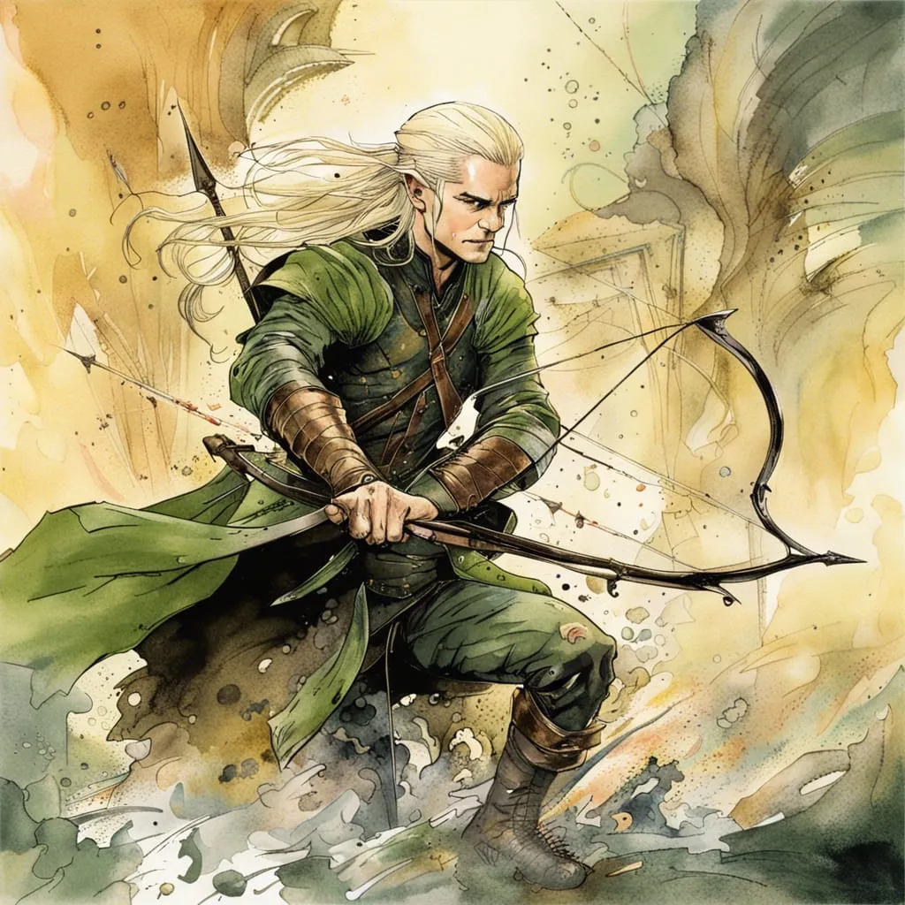

Kim jest?
Legolas, syn Thranduila, króla elfów z Mrocznej Puszczy, jest jednym z bohaterów Władcy Pierścieni J.R.R. Tolkiena, który wyróżnia się nie tylko swoją niezwykłą zwinnością i zdolnościami bojowymi, ale także lojalnością, odwagą i głęboką przyjaźnią z innymi członkami Drużyny Pierścienia. Jako elf, Legolas posiada długowieczność, zmysł do łucznictwa oraz zdolność dostrzegania rzeczy, które umykają ludziom i innym rasom Śródziemia. Legolas dołącza do Drużyny Pierścienia, by towarzyszyć swoim przyjaciołom w ich niebezpiecznej misji – zniszczeniu Jedynego Pierścienia. Jego zdolności w walce, zwłaszcza w posługiwaniu się łukiem i strzałami, są legendarne. Potrafi z niezwykłą precyzją eliminować wrogów, nie będąc zauważonym. Jego celność w walce z orkami i innymi siłami Mordoru była kluczowa w trakcie wielu potyczek, a jego zwinność i szybkość sprawiły, że był niezwykle skutecznym wojownikiem. Mimo swojej elitarnej rasy, Legolas nie jest jedynie biernym obserwatorem, ale pełnoprawnym członkiem drużyny. Jego przyjaźń z Gimlim, krasnoludem z drużyny, stanowi jeden z najpiękniejszych motywów przyjaźni między rasami w Władcy Pierścieni. Początkowo obaj bohaterowie byli niechętni względem siebie, z powodu starego konfliktu między elfami a krasnoludami. Jednak z czasem, w miarę jak podróżowali razem, ich wzajemna niechęć przerodziła się w prawdziwą przyjaźń i szacunek. Ich wspólna walka w bitwie pod Helmowym Wąwozem, a później w bitwie na Polach Pelennoru, była dowodem na to, jak daleko posunęły się ich więzi.